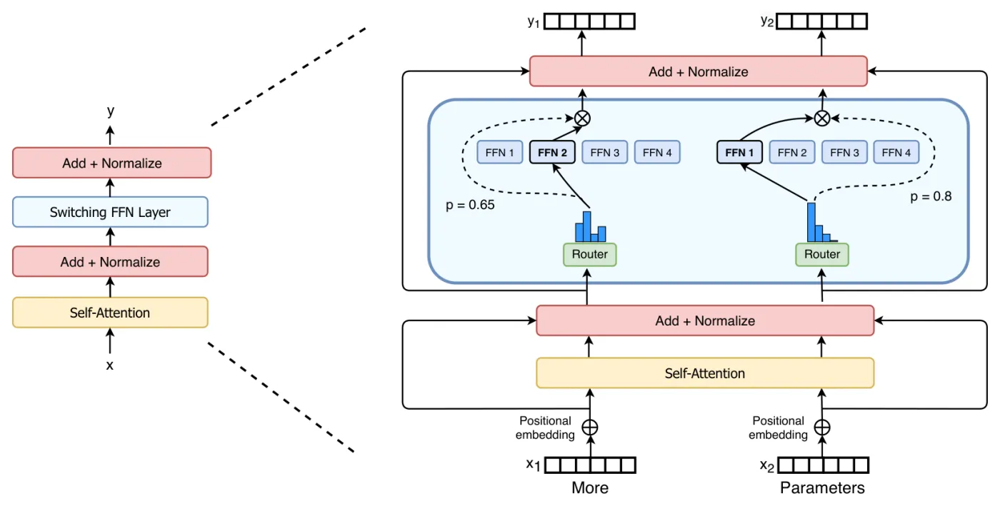
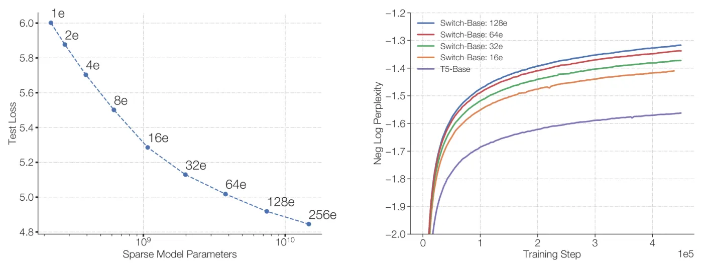

In one line: Simplified MoE to top-1 routing with a single balancing loss and selective fp32, reaching T5-Base quality up to 7x faster at equal FLOPs per token (64-expert Switch-Base) and scaling to the 1.6T-parameter Switch-C, 4x faster than T5-XXL to a fixed perplexity and the first trillion-parameter model with reported results.
How far to trust it: Believe the engineering: one expert per token, one balancing loss, a float32 router and a smaller initialisation made sparse training cheap and stable enough to reach 1.57T parameters, and the balancing loss and float32 router are still in today's configurations. Treat the size of the speedups (7x, 4x) as single runs read off curves, and the top-1 over top-2 margin as within noise: the same group recommended top-2 a year later. The evidence, point by point.
Replace every other feed-forward block with many expert copies and send each token to exactly one of them, so parameters grow with the number of experts while FLOPs per token stay those of the dense model; one balancing loss, a float32 router and a smaller initialisation make that train stably, and it reached T5-Base's quality 7x faster and 1.57T parameters.
You need the generic MoE layer (router, top-k, load balancing) from Mixture of experts, and T5's encoder-decoder from T5; this page covers what is specific to this paper. The owner's 3D figures step real tokens through a router (its Fig. 3), replay collapse against balancing (Fig. 4) and fill top-2 buffers at several capacity factors (Fig. 5); the two figures here are what Switch adds: top-1 buffers and their trade-off, and the paper's Figure 9.
New terms. Switch layer: a top-1 MoE FFN. Expert capacity: the fixed number of token slots each expert gets per batch. Capacity factor: the multiple of an even share that sets it. Dropped token: one that overflows its expert and skips the layer through the residual. Selective precision: the router alone computed in float32. FLOP-matched: a sparse model with the same FLOPs per token as its dense twin.

Kaplan-era scaling said bigger dense models are better (Kaplan et al. 2020), but in a dense model every parameter is touched by every token, so parameter count and FLOPs per token grow together. Sparse Mixture-of-Experts layers (Shazeer et al. 2017; GShard, Lepikhin et al. 2020) had shown the two can be decoupled: many expert networks, a router picks a few per token. Yet MoE saw little adoption, for three reasons the paper names and attacks head-on (§1, §7):
The question: can MoE be made simple, stable and fast enough that parameter count becomes a routine fourth scaling axis, beside model size, data and compute, "while keeping the floating point operations (FLOPs) per example constant"? The hypothesis is that "the parameter count, independent of total computation performed, is a separately important axis on which to scale" (§2).
Everything is built on T5: its encoder-decoder, its C4 corpus and its span-corruption objective (15% of tokens dropped, each span replaced by one sentinel); quality is negative log perplexity in nats, higher is better (§2.3). The generic MoE layer (routers, top-k styles, capacity, expert parallelism, current configurations) lives on Mixture of experts.
Illustrative router probabilities (expert 1 is popular); the paper's rules: capacity from Eq. 3 rounded up, slots filled in batch order, first choices before second choices. One box per token slot.
The Switch layer. Take T5 and replace the feed-forward network (FFN) in every other Transformer block with N expert FFNs plus a linear router Wr (Figure 2, the figure at the top). The router computes logits h(x) = Wr · x, a softmax turns them into gate values pi(x) = eh(x)i / Σj eh(x)j (Eq. 1), and the token goes to the single expert with the largest one. The layer's output is that expert's output multiplied by its gate value, y = pi(x) Ei(x), the k = 1 case of Eq. 2. The multiplication is what keeps the router differentiable: the choice itself has no gradient, the gate value does.
Top-1 is the core simplification. Shazeer et al. (2017) "conjectured that routing to k > 1 experts was necessary in order to have non-trivial gradients to the routing functions", intuiting that the router could not learn without comparing at least two experts; Ramachandran and Le (2018) found higher k mattered in lower layers. Switch routes to one and claims three benefits (§2.1): (1) less router computation; (2) each expert's batch, its expert capacity, "can be at least halved since each token is only being routed to a single expert"; (3) a simpler routing implementation and lower communication cost. The quality claim, that k = 1 "preserves model quality", is tested in Table 1 below.
The card runs one batch of 12 tokens through a 4-expert layer with the same router probabilities, as Switch (top-1) or as the top-2 MoE Transformer the paper compares against; the steps are the paper's own router function (Code Block 15). Pick a router:
Try capacity factor 1.0 in both modes: top-2 computes 24 slots for 12 tokens, top-1 computes 12; top-2 loses only second choices, top-1 loses whole tokens. That trade is the paper's whole bet, and §2.3 measures it.
TPUs compile static shapes, but routing is decided at run time, so each expert gets a fixed buffer (§2.2):
expert capacity = (tokens per batch / number of experts) × capacity factor (Eq. 3)
The capacity rule and token dropping were inherited from GShard (Appendix B); what Switch changes is that with one expert per token the same capacity factor buys half the buffer.
The stage runs this on real routing: the page's toy Switch layer (the Train tab's settings: 16 experts, top-1, α = 0.01, trained 1,500 steps at capacity factor 1.25, seed 1) routes one held-out batch of 512 tokens, and the same choices are buffered at several capacity factors.
The routing is recorded from the toy (mk_cap_data.cjs, the Train tab's code); only the buffer size changes between steps 2 to 4. Over all 2,048 held-out tokens the same layer drops 28.1%, 17.5% and 1.6% at capacity factors 1.0, 1.25 and 2.0. A one-layer toy is far less balanced than the paper's models (under 1%), and a drop costs it far more; measured over three seeds with each capacity factor trained: the Train tab's sweep.
Left alone, a router sends more tokens to whichever experts are already good, which then get better: imbalance, overflow and drops. For each Switch layer the paper adds one auxiliary loss to the training loss (Eq. 4):
loss = α · N · Σi fi · Pi
The loss runs from α at uniform routing to α · N at total collapse. Only P carries a gradient, and its gradient on expert i is α · N · fi: probability is pushed off the experts that actually received the most tokens, which is how a non-differentiable count steers a differentiable router. The Train tab shows what happens without it: in the toy (three seeds), α = 0 leaves the busiest expert with 4.6 times its share of tokens on average and drops 37% of them in training.
Code Block 14 computes it per core: the mean over experts of f · P, times "num_experts ^ 2", which is N · Σ fiPi, the same as Eq. 4. Read literally as Python, ^ is a bitwise exclusive or (128 ^ 2 = 130); the real moe.py writes float(experts_dim.size * experts_dim.size), a square.
Selective precision. Routing makes "hard-switching" decisions in every Switch layer, and bfloat16 "can exacerbate issues in the softmax computation for our router" (§2.4). Pure bfloat16 diverged; pure float32 is stable but pays for float32 tensors in the all-to-all (1,160 examples a second against bfloat16's 1,390). The fix: cast the router's input to float32, compute only the router function in float32, locally on each device, and recast the dispatch and combine tensors to bfloat16 at the end of the function, so "no expensive float32 tensors are broadcast through all-to-all communication operations". Float32's stability at bfloat16's speed:
bfloat16 keeps 8 significant bits (the formats themselves: Quantization and Precision), so near 128 the representable numbers are 1.0 apart (0.5 apart between 64 and 128): 128.5 rounds to 128 and the router's lead vanishes. The default reproduces, independently, the example in ST-MoE's footnote 7, a later paper by the same group (0.142 to 0.091, "alter the softmax output by 36%", ST-MoE §3.4; beyond this paper). Rounding is done here exactly as hardware does it, round to nearest even, on a float32 bit pattern. Lower the logit level and the error disappears: small logits are why ST-MoE later added the router z-loss.
A smaller initialisation. Weights are drawn from a truncated normal with σ = √(s/n), n the fan-in, values beyond two standard deviations resampled. The paper recommends cutting T5's default scale s = 1.0 by ten, to 0.1: better quality and far less variance early in training (Table 3: −2.72 ± 0.01 against −3.60 ± 0.68 after 3.5k steps, three seeds each), and the same scheme trained everything from the 223M baseline to over a trillion parameters.
Expert dropout. Fine-tuning tasks are small and a Switch model has far more parameters than its FLOP-matched dense twin, so overfitting is worse. Raising dropout everywhere hurts; dropout 0.1 outside the experts and 0.4 inside the experts' intermediate layer is best (Table 4):
The head-to-head: T5-Base, T5-Large, a top-2 MoE-Base and Switch-Base, both sparse models with 128 experts in every other FFN layer, all on 32 TPUv3 cores, quality after 100k steps and hours to a negative log perplexity of −1.50 (Table 1). Switch is FLOP-matched to T5-Base; the top-2 MoE runs two experts per token, so its FLOPs are larger.
With the C4 corpus (over 180B target tokens) the models are not data-bound, and the number of experts is "the most efficient dimension for scaling": compute per token stays nearly fixed because each token still sees one expert, and the router only adds a cost of O(dmodel × experts) (§3).
None of these figures has printed values: the 7x, 7.5x and 2.5x are the authors' readings of their curves, and this page repeats them rather than re-reading the curves. The Train tab runs the expert-count sweep on a toy at equal FLOPs per token.

Fine-tuning (§4.1). Baselines T5-Base (223M) and T5-Large (739M), each with a FLOP-matched Switch twin, all four pretrained for 576B tokens.
Pretraining with 220 (1,048,576) tokens per batch for 550k steps on an improved C4 with intra-example duplicates removed (Lee et al. 2021), so the baselines differ slightly from Raffel et al. Fine-tuning: dropout 0.1 except 0.4 in the Switch layers, batch 1M for 16k steps, validation every 200 steps, peak reported. Tasks: GLUE and SuperGLUE as token-proportional mixtures, CNNDM and XSum (Rouge-2), SQuAD and ARC, closed-book Natural Questions, Web Questions and TriviaQA (exact match), Winogrande and ANLI (accuracy).
Switch beats its FLOP-matched T5 on 10 of 11 tasks at Base and 9 of 11 at Large, including SuperGLUE (+4.4 and +2.0) and large gains on Winogrande, closed-book TriviaQA and XSum. The exceptions are ARC: T5-Base wins the Challenge set and T5-Large the Easy set (Table 5).
Distillation (§4.2). A trillion-parameter model is hard to deploy, so the sparse teacher is distilled into the dense T5-Base (distillation in general: Distillation and Small Language Models). Two tricks help: initialise the student's non-expert layers from the teacher (possible because the models are FLOP-matched, so those layers have the same shapes), and train on 0.25 of the teacher's probabilities mixed with 0.75 of the ground-truth label. Together they keep about 30% of the quality gain with about one-twentieth of the parameters (Table 6; quality gain = the share of the gap between teacher and plain T5-Base). The shares recompute exactly (recomputed).
Across teachers of 1.1B to 14.7B parameters, 37% of the gain survives at 82% compression and 28% at 99% (Table 7); a 7.4B Switch-Base fine-tuned on SuperGLUE distils into T5-Base keeping 30% (74.6 to 76.6 against the teacher's 81.3, Table 8). Three of the five compression percentages need the student counted as 0.2B rather than 223M (recomputed).
Multilingual (§4.3). mSwitch-Base against mT5-Base, pretrained 1M steps on mC4's 101 languages (107 tasks with script variants): negative log perplexity improves in all 101 languages (Figure 7); the step speedup to mT5-Base's final quality averages 5x, and 91% of languages get 4x or more (Figure 8; speedup = baseline steps divided by Switch steps to the same quality). Both figures are images only.
More experts give diminishing returns, so §5 lays out how to also grow the dense dimensions (dmodel, dff) by combining three ways of splitting work across N cores, arranged by Mesh TensorFlow as a logical mesh of n data-parallel by m model-parallel ways, N = n × m. The FFN, h = x Win and y = ReLU(h) Wout, is the example; B tokens per batch, E experts of capacity C. The paper's Figure 9 is an image; the stage redraws it for 16 cores, one strategy per step, with each strategy's communication from §5.1 to §5.5.
Same colour on several cores: a copy; distinct colours: distinct weights (glass plates, width to scale with the weights a core holds) or tokens (blocks, height to scale with tokens per core). Numbers: the released Switch-Base FFN (dmodel 768, ReLU, dff 3072, as many parameters as Table 9's GEGLU 2048), 220 tokens per batch, capacity factor 1.0, bfloat16, one FFN layer forward; FLOPs per token 9.44M in every layout, 2 per weight, one expert per token.
Each core's router builds a binary dispatch tensor of shape [n, B/n, E, C], gathers its tokens with one einsum (Eq. 7) into [n, E, C, dmodel], and an all-to-all of size [E, C, dmodel] reshards from the data dimension to the expert dimension; a second all-to-all brings the outputs back.
Two large models, both trained on C4 (Table 9):
Sample efficiency against T5-XXL. After 250k steps, "both Switch Transformer variants" beat T5-XXL's −1.147 "by over 0.061", a gap worth noting because T5-XXL needed another 250k steps to gain 0.052; by 500k steps Switch-XXL leads by 0.087 (footnote 10: a lower bound, since T5-XXL trained on an easier C4 with duplicates). Recomputed from the same table, Switch-XXL's lead is 0.061 and Switch-C's 0.051, so "over 0.061" holds for one of the two. The abstract's 4x speedup over T5-XXL is stated for Switch-C in the caption of Table 9, "to a fixed perplexity (with the same compute budget)"; the table itself shows Switch-C at 250k steps level with T5-XXL at 500k (−1.096 against −1.095).
Stability. Switch-C "exhibits no training instability at all"; Switch-XXL, with "nearly 10x larger FLOPs per sequence", is sometimes unstable and was not trained for T5's full 1M steps. From Table 9, 6.3T / 890B is 7.1x, not nearly 10x.
Switch-XXL: 89.6 exact match against Switch-C's 87.7 "despite similar perplexities", which the authors call a "striking anomaly" suggesting "a poorly understood dependence between fine-tuning quality, FLOPS per token and number of parameters" (§8, item 2). Per step on C4 Switch-XXL is also ahead (−1.008 against −1.043 at 500k). Parameters bought pretraining perplexity; FLOPs per token still mattered for fine-tuning.
Switch-XXL checkpoint after 503B tokens, about half of T5-XXL's; multi-task training for efficiency): SQuAD 89.7 against a state of the art of 91.3; SuperGLUE test 87.5 against T5's 89.3 and a state of the art of 90.0; ANLI 65.7 against a previous best of 49.4. On closed-book knowledge tasks without salient span masking it beats the previous best T5-XXL: Natural Questions 34.4 against 32.8, Web Questions 41.0 against 37.2, TriviaQA 47.5 against 42.9. Switch-XXL has the state-of-the-art upstream perplexity, but "its gains have not yet fully translated to SOTA downstream performance", and upstream gains carry better to knowledge tasks than to reasoning (Appendix E).
In short: state-of-the-art upstream perplexity, state of the art on ANLI and closed-book knowledge tasks, still behind on SQuAD and SuperGLUE, with half of T5-XXL's training tokens.
Experts in attention help in float32 but diverge in bfloat16; rerouting overflow to a second-choice expert brings nothing; multiplicative jitter is the router's exploration noise; upstream quality predicts downstream quality, less well for Switch on reasoning at large scale.
What holds up.
What is weaker.
Internal inconsistencies exist but are all minor (the expert count of Switch-XXL in Table 9 is the one a user would trip over).
Verdict. Believe the engineering and the direction: sparse top-1 MoE with these fixes trains stably and beats FLOP-matched dense T5 by a wide margin, per step and per hour. Treat the exact multipliers as single-run readings, and the top-1 over top-2 conclusion as a statement about small TPU models in 2020: the margin is within noise, and the same group recommended top-2 a year later.
This is the paper that made sparse MoE practical. It showed top-k with k > 1 was not necessary, compressed MoE's losses into one balancing loss, showed bfloat16 sparse training works with a local float32 router, and named the vocabulary the field still uses: expert capacity, capacity factor, token dropping, expert parallelism, sparse against active parameters. It made parameter count a scaling axis separate from FLOPs, and Switch-C was the first trillion-parameter model with reported results: GShard had trained a 1T MoE in bfloat16 but "encountered several trainability issues with numerical stability, hence did not include the results" (GShard).
The lineage runs straight through GLaM (top-2 of 64 experts in every other layer, 1.2T parameters; GLaM) and ST-MoE (router z-loss, top-2 at capacity factor 1.25; ST-MoE) to Mixtral (top-2 of 8 coarse experts in every layer, open weights) and to DeepSeekMoE and DeepSeek-V3 (fine-grained plus shared experts, and auxiliary-loss-free bias balancing, which addresses the balance against quality tension the f · P loss introduced). Its pain points were as influential as its fixes: token dropping motivated dropless kernels (MegaBlocks: "never drops tokens"), and its instability at scale motivated the router z-loss line of work (ST-MoE). Line by line, with sources: Then and now.
High-sparsity MoE is today's default frontier recipe (GPT-4-class models, Llama 4, Qwen3-MoE, Kimi K2); the models and their current configurations are compared on Topic: llm-landscape and Mixture of experts.
A real Switch layer, trained here, live, with the paper's router and loss: softmax router with no bias, top-1 (or top-2 for the MoE baseline), capacity from Eq. 3 filled in batch order, dropped tokens passed through the residual, output scaled by the gate value, the Eq. 4 balancing loss, and the truncated-normal initialisation with scale s of §2.4. Two runs train side by side on the same data, so one setting can be watched against another.
Routing map: rows are the 32 token types, most frequent first; columns are run B's experts.
The same code run offline by sweep.cjs over three seeds per setting (mean and the spread of the three), against what the paper reports for the same knob. Run any of them above with seed 1, 2 or 3 to get the same numbers.
Every table of the paper, transcribed from the arXiv HTML with the printed precision kept (tables.json, checked cell by cell against the extracts by check_tables.py), with every derived number recomputed by recompute.py. The paper's figures have no printed values and are not redrawn.
Each model rebuilt from its row: a T5 encoder-decoder with the 32,128-token vocabulary shared between input and output (the original T5 convention), attention width heads × 64, RMSNorm scales and relative position biases counted, GEGLU FFNs as three matrices and ReLU as two, each expert layer as E FFNs plus a dmodel × E router. FLOPs per sequence by the Kaplan et al. forward-pass count the paper cites (footnote 7): 2 per weight per token, plus attention over the context and the output logits, for 512 input and 114 target tokens (T5's span corruption). "Released" is the flaxformer gin file for that model where it differs from Table 9.
One run per row, 128 experts, 32 TPUv3 cores. Hours to Neg. Log Perp. = −1.50; every model needed more than 100k steps to get there.
Click a column to sort by it. Δ: Switch minus its FLOP-matched T5. Validation sets, best of 80 checkpoints per run, one run each.
Every number the text derives from a table, or states twice, checked. Verdicts: holds, holds by rounding, does not hold.
Switch's recipe had eight lines: how many experts a token sees, how many experts and how big, which layers get them, how the router scores, how load is balanced, what happens when an expert is full, the router's precision, and any extra router loss. The card steps through six later papers and models, one per step; each cell is sourced (hover or tap the source link), a highlighted cell differs from Switch, and the counter says how many lines still read as Switch wrote them. "Not stated" means the source does not say, not that nothing changed.
The sparse FFN as the place experts live; the router as a single linear layer whose gate value scales the expert output; an f · P balancing loss of Switch's form (as the main mechanism in Qwen3, as a small safety term in DeepSeek-V3); a router kept at higher precision than the rest; expert parallelism with all-to-all dispatch and combine.
One expert per token became two (GLaM, ST-MoE, Mixtral) and then eight small ones (DeepSeek-V3, Qwen3); capacity factors and dropped tokens gave way to dropless kernels (MegaBlocks, DeepSeek-V3); the balance against quality tension of the auxiliary loss led to a bias-based scheme (DeepSeek-V3) or a loss computed over the global batch (Qwen3); ST-MoE added the router z-loss for the instability Switch-XXL hit.
Configurations from the Hugging Face model repositories (inputs/modern_configs.json) and flaxformer gin files; quotations from the papers' arXiv HTML (inputs/later_extracts.txt). For the field-wide comparison of current MoE models, see Mixture of experts.
Every link opens in a new tab. Reading time of the resources below: 5h 45m.
JMLR 23(120), 2022, the paper itself (JMLR length, six appendices); the HTML version has the anchors this page links to. abstract page, PDF.
(1h 30m)
JAX code and all model checkpoints (repo, about 20 minutes for the README and entry path); the model configurations live in flaxformer's t5x/configs/moe/models/switch_*.gin, which this page uses to settle two Table 9 rows.
(20 min)
Hugging Face blog: the canonical MoE explainer; its sections on Switch routing, capacity factor, load balancing and selective precision are essentially a modern restatement of this paper.
(30 min)
Maarten Grootendorst: the clearest diagrams of the router, expert capacity and token dropping; walks through the Switch simplification step by step.
(30 min)
Cameron Wolfe: places Switch in the lineage from Shazeer 2017 and GShard through Mixtral and DeepSeekMoE, with the sparse against active parameter arithmetic.
(40 min)
Yannic Kilcher, YouTube: an hour-long read-through of the paper with commentary on the routing and scaling claims.
(1h)
TensorFlow Mesh: the reference implementation the paper's Code Blocks 14 to 16 are abridged from: the router, the capacity mask and the dispatch and combine tensors.
(15 min)
Zoph, Bello, Kumar, Du, Huang, Dean, Shazeer, Fedus, 2022: the same group's sequel: the router z-loss, why bfloat16 breaks the router softmax (with a worked example this page reproduces), and the revision of top-1 to top-2 routing.
(1h)
2017: the Transformer whose feed-forward sub-block the Switch layer replaces.
2019: the dense baseline, the C4 corpus and the span-corruption objective every Switch model is measured with.
2020: the dense scaling results Switch extends with a fourth axis, parameters at fixed FLOPs; also the FLOP-counting convention of the paper's footnote 7.
2019: tensor model parallelism, the technique Switch combines with expert and data parallelism in §5.
2019: the other route to trillion parameters, sharding optimiser state of a dense model instead of adding sparse experts.
2024: the open-weights descendant that made the sparse FFN template mainstream; top-2 where Switch is top-1, no capacity machinery on GPUs.
2024: modern high-sparsity MoE; its auxiliary-loss-free balancing answers the balance against quality tension of the loss introduced here.
2026: bounds the four memory bottlenecks of large-MoE training (expert dispatch, vocabulary projection, activation checkpointing, optimiser state) by scheduling rather than approximation; its row is summarised from an abstract only.
under Topic: llm-architecture, the generic MoE layer this page does not rebuild: softmax against sigmoid routers, top-k styles, capacity and dropped tokens, load balancing, expert parallelism and the router fields of current MoE configs.
expert parallelism, distributed training, distillation.
the fine-grained, shared-expert and bias-balanced end of the lineage, with its expert placement and EPLB.
This page is one row of the Papers database; its properties (Paper, Takeaway, Topics, Year) live there.